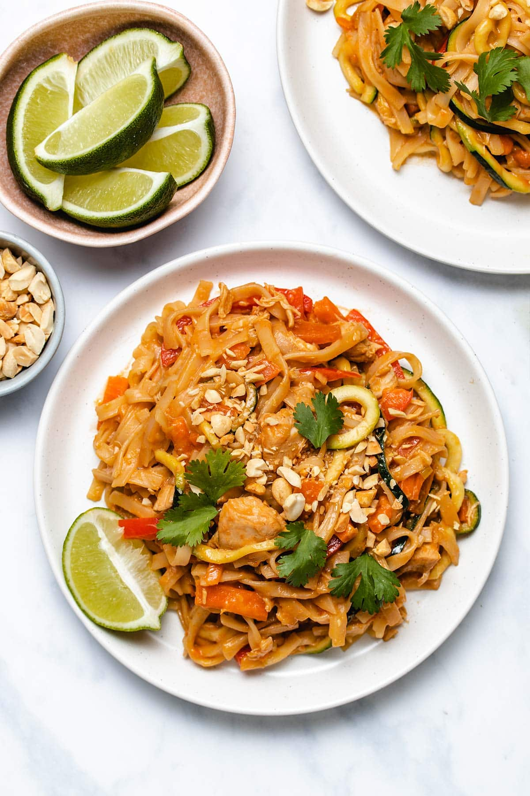

Pad Thai

Description
Skip the takeout and make this easy Instant Pot Chicken Pad Thai! Made with homemade sauce and plenty of vegetables, you will love how easy it is to make this healthier version of pad Thai at home.
This version of pad Thai is definitely not authentic (well, of course, it’s made in a pressure cooker!), but I love that it uses easy-to-find ingredients. Traditional pad Thai sauce includes tamarind paste, but it’s not easily found in my local grocery store and I bet not everyone has it on hand. I don’t think you’ll miss it, once you taste the sauce in this recipe!
Ingredients
For the Sauce
- 1/4 cub brown sugar
- 1/4 cup chicken broth or water
- 1/4 cup rice vinegar
- 1/4 cup low-sodium soy sauce or wheat-free tamari
- 2 tablespoons fish sauce (or sub with more low sodium soy sauce)
- 2 tablespoons creamy natural peanut butter
- 5 cloves garlic, minced
- 1 tablespoon sesame oil
- 1 tablespoon siracha (or to taste)
For the Pad Thai
- 1lb chicken breast, 1.5 inch dice
- 1 cup matchstick carrots (about 2 medium carrots)
- 1/4 cup diced green onion, white and light parts only (reserve green for garnish)
- 8oz rice noodles
- 2 zucchini, spiralized or cut into match sticks
- 1 cup bean sprouts
- 1 red bell pepper, thinly sliced
How to Prepare
- In a medium bowl, whisk together all the sauce ingredients.
- Place the diced chicken in the Instant Pot and pour in the sauce. Put the carrots and green onion on top. Pressure cook on Manual High pressure for 4 minutes. It will take about 10 minutes to come to pressure. At the end of cooking time, allow for a 5-minute Natural Pressure Release (NPR).
- Meanwhile, bring a large pot of water to boil on the stovetop and cook the rice noodles according to package directions, until you just reach your desired texture. Drain in a colander and set aside.
- After the 5-minute NPR, quick release any remaining pressure in the Instant Pot. Stir in the zucchini, bean sprouts and bell pepper. Put the lid on the Instant Pot to steam the vegetables in the heat of the sauce for about 3 minutes
- Add the rice noodles to the Instant Pot and use tongs to carefully toss them with the chicken and vegetables, until they're evenly covered in sauce. Let them sit for a minute to warm up, if necessary. Serve immediately with your chosen garnishes. Store leftovers in a sealed container in the refrigerator and eat within 4 days.